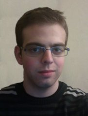

|  |
|
Prof. Manuel Eberl
Fakultät für Informatik
Freie Universität Dietersheim
Satiergartenstr. 42
85386 Dietersheim/Eching
Germany
Sprechstunde: Im Semester nie, außerhalb des Semesters auch nicht, sonst nur für Intuitionisten